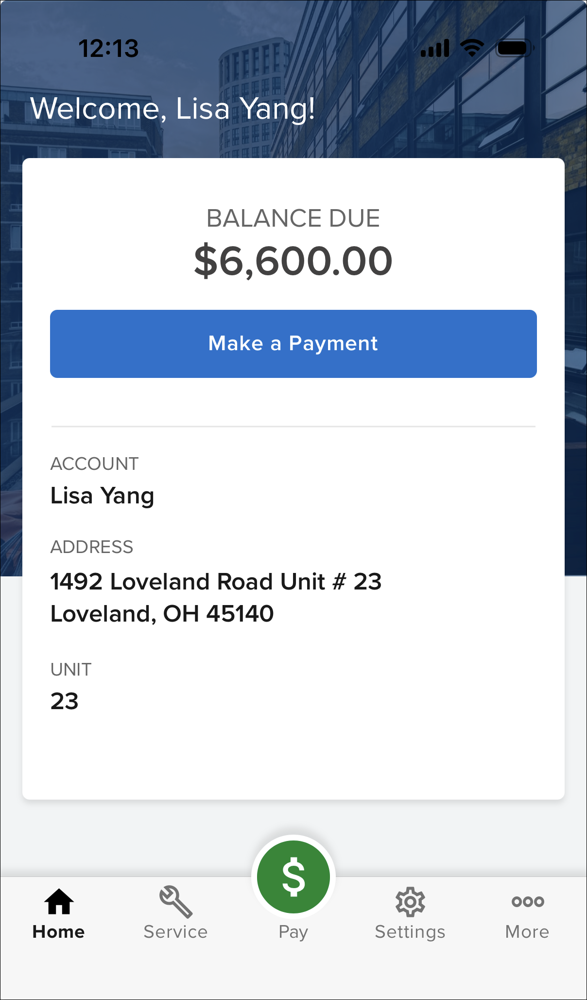

Source: https://rmxhelp.rentmanager.com/MicroContent/Resources/MicroContent/Improve-Search/rmresident.htm
rmResident
If you have the Web Portal Suite package, you can set up your tenants to use the rmResident app, which allows tenants to manage their Tenant Web Access (TWA) accounts on their mobile device. The rmResident app provides another way for your tenants to manage various aspects of their leases, such as view their balance due, transaction history, meter readings, history notes, and service issues. Additionally, tenants can make online payments, submit service issues, and edit their account information.
More Information
This feature is licensed and must be purchased separately. For more information, contact your sales representative at sales@rentmanager.com.
Once Tenant Web Access is set up, rmResident is included with no additional setup needed, and your tenants can download the app from the App Store or Google Play and log in using their TWA credentials. For more information, refer to Set Up Web Portal Suite and Set Up a Tenant or Prospect with a Tenant Web Access and rmResident Account.
